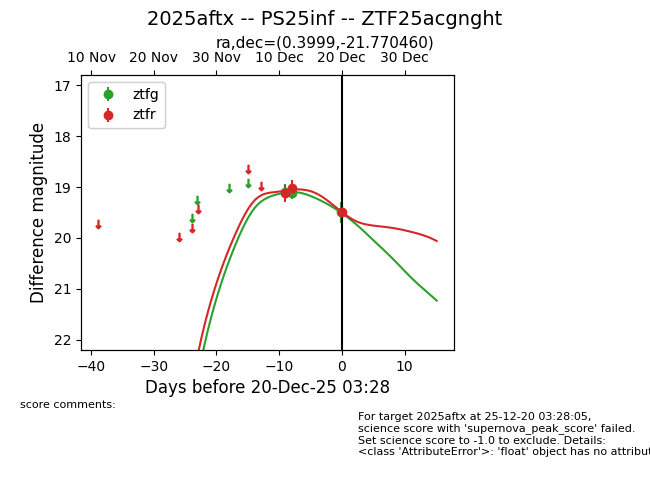
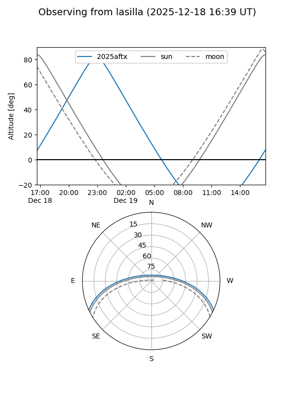
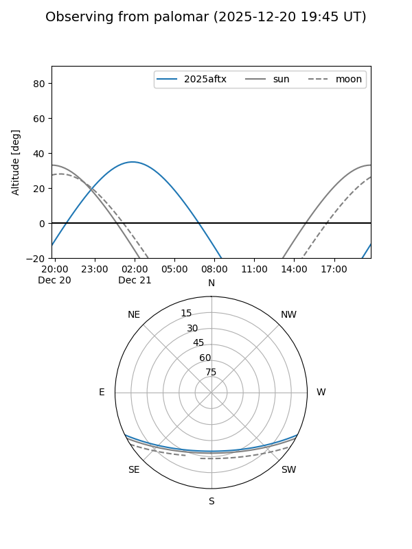
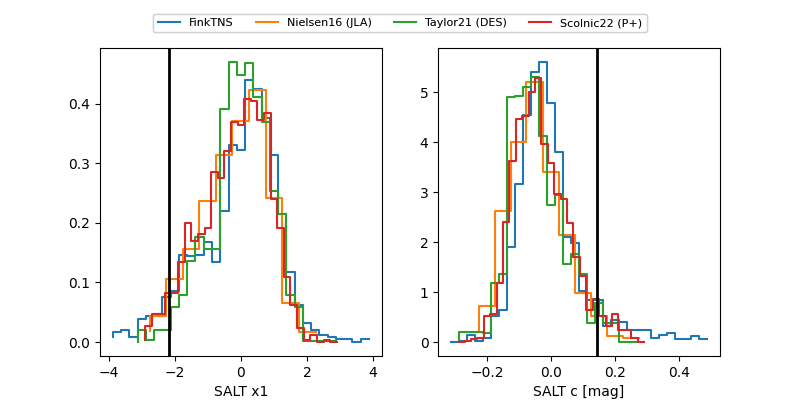

2025aftx
Target 2025aftx at 2025-12-20 03:29
Aliases and brokers:
FINK: fink-portal.org/ZTF25acgnght
Lasair: lasair-ztf.lsst.ac.uk/objects/ZTF25acgnght
ALeRCE: alerce.online/object/ZTF25acgnght
TNS: wis-tns.org/object/2025aftx
YSE: ziggy.ucolick.org/yse/transient_detail/2025aftx
alt names
ZTF25acgnght (ztf,fink_ztf)
2025aftx (tns,yse)
PS25inf (panstarrs)
Coordinates:
equatorial (ra, dec) = 0.3999,-21.77046
equatorial (HMS+DMS) = 00:01:35.98,-21:46:13.66
galactic (l, b) = (55.5316,-77.46548)
Flags:
Photometry:
last ztfg=19.50, ztfr=19.50
3 ztfg, 3 ztfr detections
Lightcurve

Visibility


Additional plots
